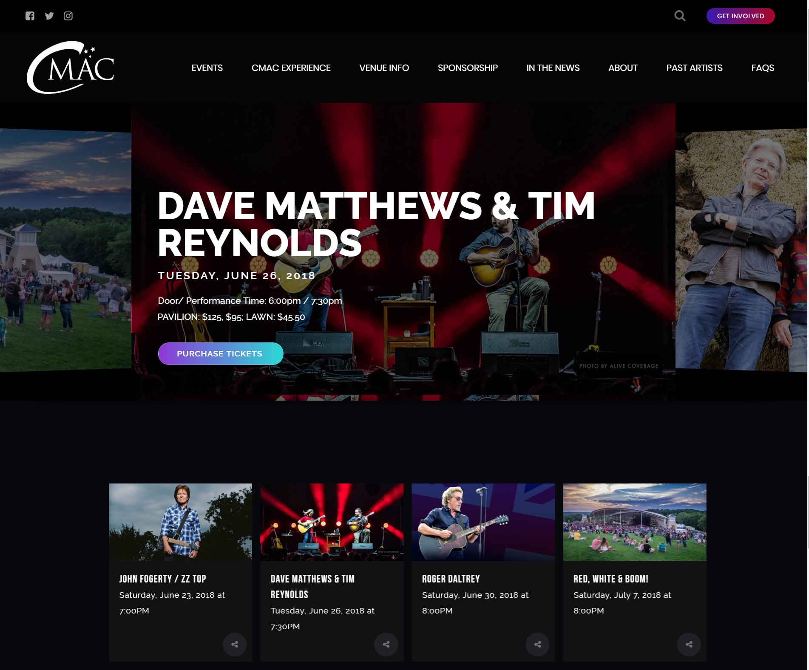

Developed the new Constellation Brands Marvin Sands Performing Arts Center website within a team. A design blueprint was created by a designer and the developers built it with the WordPress CMS. After it was launched, the team and I ran a quality check through the site to make sure things looked as they should.
Technologies used: HTML, CSS, JavaScript, WordPress